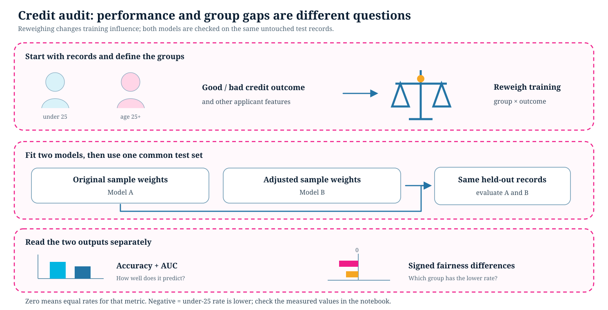

On this page
Bias Detection: Credit Decision Audit
Starter kit: starter_kits/5_bias_detection_interpretability/credit_audit/credit_decision.ipynb
Question and learning goals
Can a classifier perform well on a held-out set while its favourable predictions differ by age group? The lesson uses the tracked data/german_credits/german.data file directly.
- Define good credit and the under-25 versus age-25+ groups.
- Explain how reweighing changes training weights.
- Compare accuracy and AUC on one test split.
- Interpret signed statistical parity and equal opportunity differences.

Workflow
The notebook loads German credit records through credit_utils, splits them once, and compares original and reweighted training. Two LightGBM models are evaluated on the same test records. AIF360 calculates fairness metrics. Reweighing acts on training data; it does not alter the test outcomes.
Read performance and fairness separately. For both signed gaps, under 25 minus age 25+ is the direction: a negative value means a lower favourable prediction rate, or a lower true-positive rate for equal opportunity, among under-25 applicants. The charts preserve negative values and display the zero line. The numeric result depends on the actual run.
This example uses AIF360 and LightGBM. It does not run an LLM, SHAP, LIME, or a counterfactual fairness analysis. One sample and split cannot establish deployment or legal fairness.